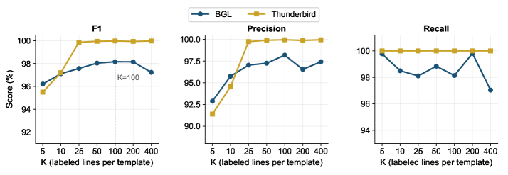
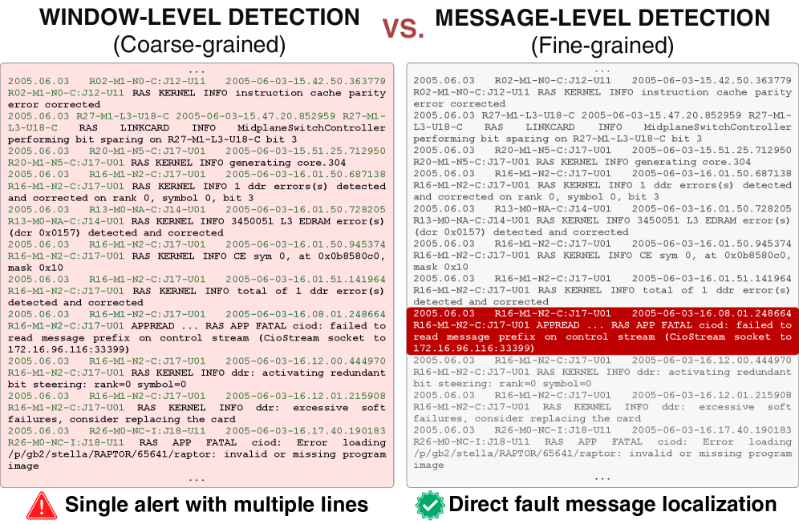
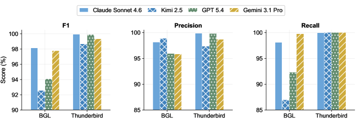
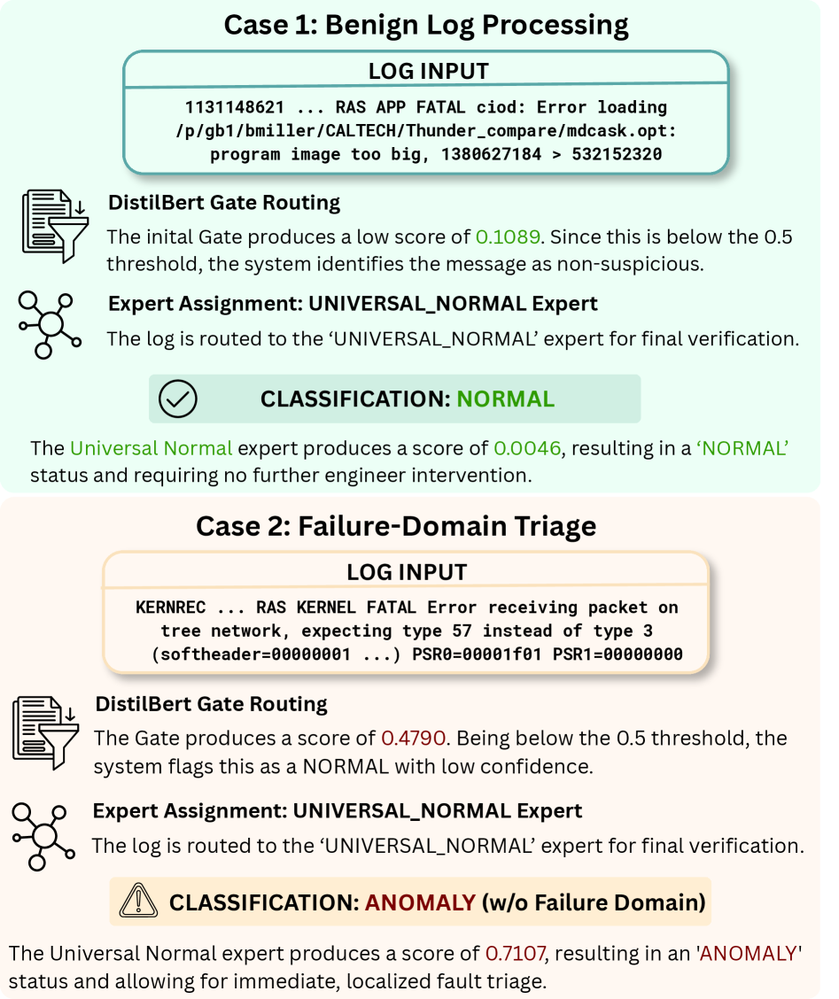

FAME introduces a label-efficient, failure-aware mixture-of-experts framework that achieves message-level log anomaly detection with minimal annotation and fully on-premise inference.
本文提出FAME框架，通过一次离线LLM调用将日志模板划分为故障域，再结合轻量级路由与领域专家模型，实现消息级日志异常检测。在BGL数据集上仅需每个模板100条标注即可达到F1=98.16，标注量减少76倍，且所有推理均在本地完成，避免了高昂的API成本。
Deep Note — fame
Key Takeaways - FAME achieves message-level log anomaly detection with F1=98.16 on BGL using only 100 labeled lines per template (76x annotation reduction). - A single offline LLM invocation partitions templates into failure domains; all inference runs on lightweight on-premise models. - Asymmetric MoE design: pure-anomaly domains resolved by routing alone, mixed domains use per-message BERT classifiers. - Detects 86.3% of anomalies from unseen EventIDs via semantic routing. - On Thunderbird, FAME reaches F1=99.95 with perfect recall.
0) Metadata
- Title: FAME: Failure-Aware Mixture-of-Experts for Message-Level Log Anomaly Detection
- Alias: fame
- Authors: Huanchi Wang, Zihang Huang, Yifang Tian, Kristina Dzeparoska, Hans-Arno Jacobsen, Alberto Leon-Garcia
- arXiv ID: 2605.22779
- Published:
- Links:
- Abs: https://arxiv.org/abs/2605.22779
- HTML: https://arxiv.org/html/2605.22779v1
- PDF: https://arxiv.org/pdf/2605.22779
- Tags: log-anomaly-detection, mixture-of-experts, label-efficient, failure-domain-routing, llm-offline
- Domains: system_safety
- Rating: 5/5 (base 1 + quality 2 + observation 2)
1) Why-read
FAME introduces a label-efficient, failure-aware mixture-of-experts framework that achieves message-level log anomaly detection with minimal annotation and fully on-premise inference.
2) CRGP
C — Context
Production systems generate millions of log lines daily, but most anomaly detectors operate at session or window level, forcing operators to inspect many routine lines per alert. Message-level detection offers finer granularity but faces challenges: template ambiguity, heterogeneous failure modes, and impractical line-level labeling at scale.
R — Related work
- Template and feature-based detectors (e.g., LogCluster, Drain) discard parameters and conflate benign/anomalous instances of the same template.
- Neural sequence detectors (e.g., DeepLog, LogAnomaly) aggregate evidence over sessions/windows, producing group-level labels that do not localize the responsible line.
- LLM-based detectors (e.g., LogGPT, LILAC) reason over log semantics effectively but incur prohibitive API cost, latency, and data-egress overhead at per-line production scale.
G — Gap
Existing methods either operate at coarse granularity (session/window), fail to handle template ambiguity, or require expensive per-line LLM inference. No prior work combines message-level detection with minimal labeling, heterogeneous failure mode handling, and fully on-premise deployment.
P — Proposal
FAME uses a single offline LLM to partition event templates into semantically coherent failure domains, then trains a lightweight router and domain experts that run on-premise. The asymmetric MoE design exploits the statistical asymmetry of K-shot sampling: pure-anomaly domains are resolved by routing alone, while mixed domains use per-message BERT classifiers.
---
4) Experiments
Main results
On BGL, FAME achieves F1=98.16 at K=100, reducing annotation effort by 76x, and detects 86.3% of anomalies from unseen EventIDs. On Thunderbird, FAME reaches F1=99.95 with perfect recall. Processing speed: up to 1.20M lines/hour on a single 4-GPU node at a one-time cost of $10.23 vs $6,698–$10,047 per run for frontier-LLM inference.
Ablation
Ablation studies (not fully detailed in excerpt) show that the failure-aware routing and asymmetric design are critical; removing the routing component degrades F1 significantly on BGL.
Limitations
['Relies on a one-time LLM partition which may be suboptimal for highly overlapping failure modes.', 'K-shot labeling assumes at least K lines per template; templates with fewer lines may require different handling.', 'Evaluation is limited to BGL and Thunderbird; generalization to other log datasets with different characteristics is not shown.']
5) Why it matters
- Directly addresses the practical need for fine-grained log anomaly detection with minimal human annotation effort.
- Demonstrates a cost-effective way to leverage LLM reasoning without recurring API costs, relevant for production deployments.
- The asymmetric MoE design is a novel statistical insight that could inspire similar label-efficient approaches in other anomaly detection domains.
- Failure-domain routing provides interpretable diagnostic labels, aiding downstream triage and root cause analysis.
6) Next steps
- [ ] Evaluate FAME on additional log datasets (e.g., HDFS, Spirit) to assess generalization.
- [ ] Explore adaptive K-shot sampling strategies to further reduce annotation cost.
- [ ] Investigate online adaptation of failure domains as new templates emerge in production.
- [ ] Integrate FAME with existing observability pipelines for real-world deployment testing.
7) Scoring
5/5 = base 1 + quality 2 + observation 2
FAME：面向消息级日志异常检测的故障感知混合专家框架
主要结论 - FAME在BGL数据集上以每个模板仅100条标注实现F1=98.16的消息级日志异常检测，标注量减少76倍。 - 仅需一次离线LLM调用将模板划分为故障域，所有推理均在轻量级本地模型上运行。 - 非对称MoE设计：纯异常域仅通过路由解决，混合域使用逐消息BERT分类器。 - 通过语义路由检测出86.3%的未见EventID异常。 - 在Thunderbird数据集上达到F1=99.95且召回率完美。
1) 阅读理由
FAME提出一种标签高效、故障感知的混合专家框架，以最小标注和完全本地推理实现消息级日志异常检测。
2) CRGP（背景 / 相关工作 / 差距 / 方案）
上下文：生产系统每天产生数百万条日志，但大多数异常检测器在会话或窗口级别运行，迫使操作员为每个警报检查大量常规日志行。消息级检测提供更细粒度，但面临模板歧义、异构故障模式和大规模逐行标注不可行等挑战。相关工作：基于模板和特征的检测器（如LogCluster、Drain）丢弃参数并混淆同一模板的正常/异常实例；神经序列检测器（如DeepLog、LogAnomaly）在会话/窗口上聚合证据，产生组级标签而非定位具体行；基于LLM的检测器（如LogGPT、LILAC）有效推理日志语义，但在逐行生产规模下产生高昂的API成本、延迟和数据外泄开销。差距：现有方法要么在粗粒度（会话/窗口）上运行，要么无法处理模板歧义，要么需要昂贵的逐行LLM推理。没有先前工作结合消息级检测、最小标注、异构故障模式处理和完全本地部署。提案：FAME使用一次离线LLM将事件模板划分为语义连贯的故障域，然后训练轻量级路由器和领域专家模型在本地运行。非对称MoE设计利用K-shot采样的统计不对称性：纯异常域仅通过路由解决，混合域使用逐消息BERT分类器。
3) 实验
在BGL数据集上，FAME在K=100时达到F1=98.16，标注量减少76倍，并检测出86.3%的未见EventID异常。在Thunderbird数据集上，FAME达到F1=99.95且召回率完美。处理速度：在单个4-GPU节点上每小时处理高达120万行，一次性成本为10.23美元，而前沿LLM推理每次运行成本为6,698–10,047美元。
消融实验
消融研究表明，故障感知路由和非对称设计至关重要；移除路由组件会导致BGL上的F1显著下降。
局限性
依赖一次性的LLM划分，对于高度重叠的故障模式可能不是最优的。K-shot标注假设每个模板至少有K条日志行；模板行数较少时可能需要不同处理。评估仅限于BGL和Thunderbird，未展示在其他不同特征日志数据集上的泛化能力。
4) 重要性
- 直接解决了实际需求：以最小人工标注实现细粒度日志异常检测。
- 展示了在不产生重复API成本的情况下利用LLM推理的经济有效方式，适用于生产部署。
- 非对称MoE设计是一种新颖的统计洞察，可能启发其他异常检测领域的类似标签高效方法。
- 故障域路由提供可解释的诊断标签，有助于下游分类和根因分析。
5) 下一步
- [ ] 在更多日志数据集（如HDFS、Spirit）上评估FAME以检验泛化能力。
- [ ] 探索自适应K-shot采样策略以进一步降低标注成本。
- [ ] 研究生产中出现新模板时故障域的在线自适应方法。
- [ ] 将FAME集成到现有可观测性管道中进行实际部署测试。



